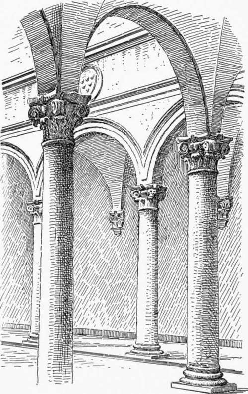
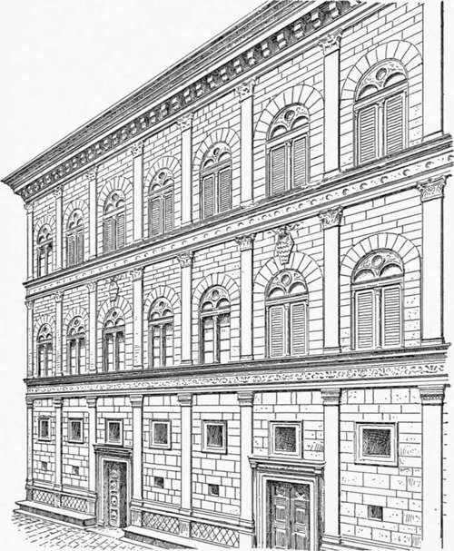
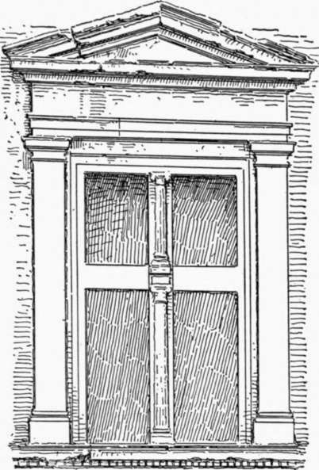

Palace Architecture Of The Florentine Renaissance. Continued
Description
This section is from the book "Character Of Renaissance Architecture", by Charles Herbert Moore. Also available from Amazon: Character of Renaissance Architecture.
Palace Architecture Of The Florentine Renaissance. Continued
The spacious apartments of these early Florentine palaces are generally fine in their proportions and simple in their architectural treatment. They are, however, rarely well lighted. The ceilings are at a great height above the comparatively low windows, and the windows are disposed for external effect, rather than for convenience within. Thus while these apartments are stately, they are rarely adapted to cheerful indoor life, and in a northern climate they would be intolerably gloomy. When used, as they now often are, as galleries for the display of works of art, they do not serve well, very small portions of their vast wall spaces being well lighted, and the disposition of the openings often such as to produce embarrassing cross lights and reflections.
Vasari tells us that "after Brunelleschi, Miche-lozzi was held to be the most consistent architect of his time, and the one who with best judgment planned either palaces, monasteries or houses." And concerning the Riccardi he adds, " All the more praise is due him since this was the first palace in Florence built in the modern manner, and which has a disposition of apartments both useful and beautiful."1 He does not explain in what the superior planning of the Riccardi consists, and it is doubtful whether these remarks were based on any definite idea. But however this may be, the building is indeed a stately and magnificent one, of quiet aspect, and for the most part free from meaningless features.
1 Le Vite, etc., vol. 2, pp. 432-433
Fig. 58. —Court of the Riccardi.
Hardly any other one of the Florentine palaces of the Renaissance equals the Riccardi in beauty and dignity. That part of the Pitti which was begun by Brunelleschi in 14.35, though equally free from meaningless features, is almost too bald to be called an architectural design. Each story of its long facade is as monotonous as the Claudian aqueduct which it closely resembles.
The front of the small palace called the Strozzino is in the style of the Riccardi, and is attributed to the same architect. It has but one story above the high basement, and the treatment is even more mediaeval in character, the window arches having the pointed form.
The Palazzo Strozzi, begun in 1489 by Benedetto da Majano, follows the same general scheme as the Riccardi, but is less admirable in its proportions. Vasari tells us that Majano carried the exterior almost to completion, but that the court and the great cornice were the work of Simione Pollaiuolo, called II Cronaca. This cornice, he says, was copied from an ancient model in Rome which the architect had drawn and measured with great exactness, but he had here enlarged the scale to suit the proportions of the building.1 I think it may be said that he enlarged it too much, and that, in common with the cornices of most of these Renaissance palaces, it is too heavy. The Strozzi, more than any other of the palatial houses of its time, has the fortress-like character which indicates the turbulent condition of Florence in the fifteenth century. The vast basement of ponderous masonry, with no window openings near the ground, gives a gloomy and forbidding aspect to the front, and marks a survival of the savage habits of feudal life in this epoch of advanced Italian civilization and culture.
The Palazzo Pazzi, now known as the Quaratesi, is attributed to Brunelleschi, and. has the marks of his style in the details of the windows. It has the same general scheme of design as the foregoing houses, and its stories are proportioned with the same pleasing gradation in their heights that we have noticed in the Riccardi; but the wall surfaces are different, being uniformly overlaid with stucco. A series of small circular openings, with mouldings over the windows of the topmost full story, resembling those of the drum of the Pazzi chapel, seem to give further evidence of Brunelleschi's hand. Still another building in this style, though of even plainer external character, having small undivided openings, is the Palazzo Gondi, designed by Guiliano da San Gallo toward the close of the fifteenth century. The arcades of the court of the Gondi.have Corinthian columns of great elegance, and the arches have ornamental keystones.
1 Op. cit., vol. 4, p. 444.
Another type of Florentine palace of the early Renaissance is exemplified in the Palazzo Guardagni, attributed to Simone Pallaiuolo. It has an open loggia at the top, and the portals and windows have the round arched form with the extrados pointed. This is a thoroughly reasonable and appropriate Italian style of domestic building, and if it had been consistently adhered to, without any admixture of the classic elements that were soon introduced, the domestic architecture of Florence in the fifteenth and sixteenth centuries might have merited our unqualified admiration. On the simple and appropriate scheme of the Palazzo Guardagni there was opportunity for such variations of disposition, proportion, and details as utility and taste might call for, without any resort to neo-classic elements.
The foregoing buildings, though larger and more elegant than the private houses of the Middle Ages, are still in their main features largely mediaeval in character. But before the later buildings of this class were erected, another phase of design in palatial architecture arose in which the spirit of the Renaissance is more manifest in the application of the classic orders to the walls of the facades. This application, as is well known, occurs first in the Palazzo Rucellai, designed by the architect Alberti and built just after the middle of the fifteenth century. We have already (pp. 35-42) seen something of Alberti's use of classic orders in church architecture, and we have now to consider further the influences which were guiding the public taste as they are reflected in the works of the man who on the whole did most at this early epoch to establish the new architectural ideas. Alberti was a scholar and a man of high social station. Like most men of culture in Florence he had a taste for the fine arts, but, as Vasari tells us, he "applied himself not only to discover the principles and the proportions of antiquity, but also, being naturally so inclined, much more to writing than to practice."1 The moving purpose with him was thus primarily archaeological and literary, rather than artistic.
The Rucellai is in form substantially like the Riccardi and other buildings of its class, but in place of the plain wall surfaces which are appropriate for a building that has no structural framework, we have an order of classic pilasters dividing the face of each story into bays answering to nothing in the real system of construction (Fig. 59). We thus have here in domestic architecture an instance of that false use of the orders which in church architecture was first introduced in the chapel of the Pazzi. Alberti's classic tendencies are here shown further in the introduction of a diminutive entablature passing through the smaller arches of the windows, and these arches are merely cut in relief on a solid tympanum (Fig. 59). It is worthy of notice, too, that the rustication of the masonry of this fagade does not mark the true joints. The blocks of stone are in many cases much larger than they appear, channels being cut upon them to simulate joints. The arch of one window, for instance, which by the rustication would appear to be made up of fourteen voussoirs, has in reality only three. The same lack of conformity of the simulated jointing with the true masonry joints is noticeable also in many parts of the fagade of the Riccardi, and I know not how general this treatment may be in the architecture of the Renaissance.1
Fig. 59. — Facade of the Rucellai.
1 Op. cit., vol. 2, p. 537.
The initiative thus given by Alberti was not at once universally followed. The orders did not come into general use in the fagades of domestic architecture until the period of the later Renaissance. The most important Florentine palaces of the latter part of the fifteenth century have, as we have seen in the Strozzi, no classic orders. The classic elements of these buildings are confined to details such as the profiling of cornices, and the introduction of dentils and other kindred ornaments, and to the capitals of court arcades.
Early in. the sixteenth century a further innovation in the treatment of palace fronts was made in Florence by the Architect Baccio d' Agnolo, whose design for the campanile of Santo Spirito we have already noticed (p. 82), in the Palazzo Bartolini. This consisted in framing the windows with small orders crowned by pediments (Fig. 60). Milizia thus refers to this innovation : " This was the first palace with windows adorned with frontispieces and with columns at the doorway carrying architrave, frieze, and cornice. A novelty, like most others, at first disapproved and then idolized. The Florentines all ridiculed Baccio for this new style of architecture, not only with words, but with sonnets, and with jesting devices attached to the building, taunting him with having made a church of a palace." 1 For the rest, though Baccio d' Agnolo has not adorned the walls of this building with orders, he has marked the stories with entablatures, and placed rusticated pilasters at the angles.
Fig. 60. — Window of the Bartolini.
1 i believe i am correct in this. Photographs seem to show it clearly, but i have not verified this point in the monuments themselves.
As time went on the spirit of display in domestic architecture increased. Buildings like the Riccardi owe their admirable character largely to their moderation. The well-known remark of the Florentine Republic was spent, and its artistic ascendency was declining. Lorenzo de' Medici had died, and the chief seat of artistic activity was, as we have already seen, transferred to Rome where the conditions were very different from what they had been in Florence during the earlier time. Ideals and aspirations were further changed, and the quest of material splendour was more than ever stimulated under the mundane ambitions of a luxurious and profligate society. Thus it was that in connection with the later neo-classic church architecture already considered there arose a corresponding movement in the erection of Vasari2 that Cosimo de' Medici had rejected a scheme for that building which had been prepared by Brunelleschi on the ground that so sumptuous a dwelling for a private citizen might excite envy, indicates the more modest feeling and sense of fitness, which as yet held in check the spirit of ostentation. But the boast of Filippo Strozzi that he would make his great palace excel all others in magnificence betrays the ambition that governed the later builders of the great houses of the Renaissance.
1 Op. cit., vol. i, p. 240. 2 Le Vite, etc., vol. 2, p. 433.
By the beginning of the sixteenth century the vigour of sumptuous palatial houses, though still for some time palatial architecture retained much of the earlier moderation in design. The great Roman houses of the early part of the sixteenth century have a dignity and grandeur that go far to redeem their incongruities. It was not, as we shall see in the next chapter, until men like Sansovino, Vignola, and Palladio appeared that the Roman influences bore their full fruit.
Continue to:
- prev: Chapter VI. Palace Architecture Of The Florentine Renaissance
- Table of Contents
- next: Chapter VII. Palace Architecture Of The Roman Renaissance